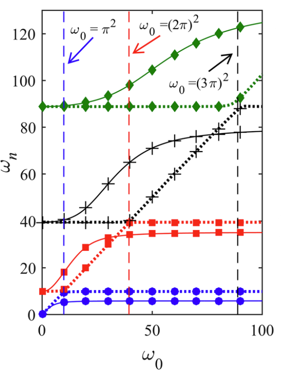

Large amplitude free vibration of a viscoelastic beam carrying a lumped mass–spring–damper
Nonlinear Dynamics, 90, pp.1053-1075, 2017. Journal Article

Abstract
Numerous engineering structures can be modeled as flexible beams carrying appendages. Physical time-dependent phenomena in such structures appear by considering nonlinear models. Accordingly, the free vibration of a nonlinear Rayleigh beam carrying a linear mass–spring–damper is investigated in this research. The nonlinearity is due to the axial stress changes and the viscoelastic characteristic of the beam is described by the Kelvin–Voigt model. The governing nonlinear equations of motion are derived by using Hamilton’s principle and solved by the multiple scales method. The presence of the linear damper in the mass–spring–damper system causes a contradiction in the time response of the mass obtained from the classical procedure of the multiple scales method. Therefore, the problem is solved by some manipulations in the process of the multiple scales method. Then, the complex-valued resonance frequencies and mode-shapes are derived by applying the method of power series with the aid of Green function concept. Considering the solvability condition, the nonlinear time-dependent resonance frequencies and the vibration response are obtained. The stability of the solution is studied by using the forward and pullback attractor ideas. Finally, the vibration of the system involving 3:1 internal resonance is investigated and the stability boundaries of the trivial and non-trivial steady-state solutions are derived based on Lyapunov’s first method. It is shown that the main parameters of the MSD can provide 3:1 internal resonance condition.